แปลหัวข้อย่อยตามต้นฉบับ
ลำดับและหมายเลขตามข้อความในไฟล์ แม้ต้นฉบับใช้เลขหัวข้อซ้ำก็เก็บไว้เพื่อเทียบได้
แปลและเรียบเรียงเป้าหมายความปลอดภัย
Confidentiality ป้องกันการเปิดเผย, Integrity ตรวจการเปลี่ยนข้อมูล, Authentication ยืนยันตัวตนหรือแหล่งข้อความ และ Nonrepudiation ให้หลักฐานตามระบบที่ออกแบบ ส่วน Availability คือการพร้อมให้บริการ การทำ encryption อย่างเดียวไม่ครอบคลุมทุกเป้าหมาย
Authentication วัดว่าเป็นใคร ส่วน Authorization วัดว่าทำอะไรได้ Accounting/Auditing บันทึกการกระทำ จึงมีกรณี login สำเร็จแต่ไม่มีสิทธิ์อ่านไฟล์ ซึ่งไม่ใช่ความขัดแย้ง
กลับสารบัญ ↑Hash, MAC และ Digital Signature
Hash สร้าง digest โดยไม่ใช้กุญแจลับในนิยามพื้นฐาน หากส่งข้อความกับ hash ผ่านช่องที่ผู้โจมตีแก้ได้ทั้งคู่ ผู้โจมตีอาจคำนวณ hash ใหม่ จึงยังไม่ยืนยันผู้ส่ง
Message Authentication Code ใช้กุญแจลับร่วมกันช่วยตรวจ integrity และยืนยันว่ามาจากผู้รู้กุญแจ ส่วน Digital Signature ใช้ private key เซ็นและ public key ตรวจตาม scheme ช่วยให้ตรวจหลักฐานโดยผู้ที่ไม่มีกุญแจเซ็นได้ ลายเซ็นไม่ทำให้เนื้อหาลับโดยอัตโนมัติ
คำว่า MAC ใน security หมายถึง Message Authentication Code ต่างจาก MAC address และ Medium Access Control ใน LAN ต้องดูบริบทก่อนแปล
กลับสารบัญ ↑Replay, Nonce และ Certificate
Replay คือส่งข้อความเก่าที่ถูกต้องซ้ำเพื่อให้ระบบยอมรับอีกครั้ง แม้ข้อความมีการเข้ารหัสหรือ MAC ก็ยังต้องมี freshness เช่น nonce, timestamp หรือ sequence ตาม protocol ที่ตรวจอย่างถูกต้อง
Certificate ผูกตัวตน/ชื่อกับ public key ภายใต้ความเชื่อถือของผู้ออก การมี certificate ไม่ได้ทำให้ทุกข้อมูลในเว็บเป็นจริง ต้องตรวจชื่อ อายุการใช้งาน ความเชื่อถือ และการใช้ตามนโยบายของระบบด้วย
กลับสารบัญ ↑เสริมชุด Network: การป้องกันหลายระดับ
มาตรการกายภาพ เช่นห้องอุปกรณ์และไฟสำรอง, มาตรการปฏิบัติงาน เช่นบัญชีเฉพาะบุคคล การกำหนดสิทธิ์และสำรองข้อมูล, มาตรการเครือข่าย เช่นการแบ่งเครือข่ายและกรอง traffic สนับสนุนกัน การติด firewall อย่างเดียวไม่แทน patch, password policy หรือการติดตามเหตุการณ์
ตัวอย่างภัยในสไลด์ ได้แก่ malware, sniffing, spoofing และ DoS ต้องแยก sniffing ที่ดักสังเกตจาก spoofing ที่ปลอมแหล่ง และ DoS ที่กระทบการให้บริการ
ลองตอบ: เซ็นข้อความแล้วข้อความลับหรือไม่
เฉลยและเหตุผล: ไม่ ผู้ตรวจลายเซ็นอาจอ่านเนื้อหาได้ หากต้องการความลับต้องมี encryption ตามระบบเพิ่มด้วย
ลองตอบ: Password ถูกต้องแปลว่ามีสิทธิ์ทุกไฟล์หรือไม่
เฉลยและเหตุผล: ไม่ Authentication ผ่านแล้วต้องตรวจ authorization ของการกระทำนั้นต่อ
จำให้ได้: CIA, authentication/authorization, hash/MAC/signature และ freshness เป็นคนละหน้าที่
กลับสารบัญ ↑แปลหัวข้อย่อยตามต้นฉบับ
ลำดับและหมายเลขตามข้อความในไฟล์ แม้ต้นฉบับใช้เลขหัวข้อซ้ำก็เก็บไว้เพื่อเทียบได้
แปลและเรียบเรียงตำแหน่งของการป้องกัน
IPsec ทำงานในชั้น IP; TLS ปกป้องช่องสื่อสารให้แอปตามโครงสร้างที่ใช้; PGP ปกป้องข้อความ/ไฟล์ตามระบบที่กำหนด การเลือกจุดป้องกันต่างกันทำให้ผู้ที่เห็นข้อมูลและขอบเขตที่คุ้มครองต่างกัน
เอกสารมีคำว่า SSL และอัลกอริทึมยุคเก่า ให้ใช้เพื่อศึกษาพัฒนาการของ protocol ไม่ถือว่ารายการโหมดในเอกสารเป็นคำแนะนำตั้งค่าระบบใช้งานจริง
กลับสารบัญ ↑IPsec
Security Association หรือ SA เป็นบริบทการรักษาความปลอดภัยของทิศทางหนึ่ง มีข้อมูลเช่นตัวระบุและกุญแจตามระบบ การส่งสองทิศจึงต้องมีบริบทที่เหมาะสมทั้งสองทาง AH เน้น integrity/authentication ของส่วนที่ออกแบบให้คุ้มครอง ส่วน ESP ให้การปกป้อง payload รวมถึง confidentiality เมื่อใช้ encryption ที่กำหนด
Transport mode ป้องกันส่วน payload ของ packet เดิมตาม protocol ส่วน Tunnel mode ห่อ IP packet เดิมไว้ใน packet ใหม่ จึงเหมาะกับภาพ site-to-site ที่ gateway เชื่อมเครือข่ายภายในสองฝั่ง ขอบเขตการป้องกันหยุดที่ gateway แล้วหรือถึง host ต้องดู mode และ endpoints
กลับสารบัญ ↑TLS และ HTTPS
TLS handshake เจรจาพารามิเตอร์ ยืนยันตามวิธีที่ใช้ และสร้างบริบทกุญแจสำหรับ application data HTTPS คือ HTTP บนการปกป้องด้วย TLS ตามการใช้งานนั้น Browser ต้องตรวจ certificate ของชื่อปลายทางด้วย ไม่ใช่แค่เห็นกุญแจแล้วรับทุกตัวตน
TLS ป้องกันข้อมูลระหว่าง endpoints ของช่อง ถ้า endpoint ถูกยึด ข้อมูลก่อนเข้ารหัส/หลังถอดยังเสี่ยง และการป้องกันช่องไม่ได้ยืนยันว่าเนื้อหาจากคู่สื่อสารถูกต้องทุกข้อความ
กลับสารบัญ ↑VPN และ Firewall
VPN สร้างการเชื่อมโยงเชิงตรรกะผ่านโครงข่ายที่ใช้ร่วมกัน การปกป้องขึ้นกับ protocol และ configuration Site-to-site ต่อ gateway ของสองไซต์ ส่วน remote access ต่อผู้ใช้เข้าสู่เครือข่าย อย่าคิดว่า VPN ซ่อน metadata ทุกชนิดหรือทำให้ทุกเว็บไซต์ปลอดภัยโดยอัตโนมัติ
Packet-filter firewall ดู fields เช่น IP, protocol และ port; Stateful firewall ติดตามสถานะการสื่อสาร; Application proxy ตรวจในระดับบริการได้ลึกขึ้นตามระบบ Default policy และลำดับ rule สำคัญ เพราะกฎที่ตรงก่อนอาจกำหนดผลต่างกัน
กลับสารบัญ ↑PGP
PGP รวมกลไกเช่น hash/signature, compression, symmetric encryption และ public-key mechanism เพื่อปกป้องข้อความตามรูปแบบ การเซ็นกับการเข้ารหัสอาจทำร่วมกันแต่ต้องรู้ว่าแต่ละขั้นให้คุณสมบัติอะไร ไม่ตอบว่า “ใช้ public key จึงมีทุกคุณสมบัติ”
ลองตอบ: IPsec tunnel ป้องกัน packet เดิมต่างจาก transport อย่างไร
เฉลยและเหตุผล: Tunnel ห่อ packet เดิมรวม IP header เป็นข้อมูลภายใน packet ใหม่ ส่วน transport คง IP header เดิมเป็นโครงภายนอกและป้องกันส่วนที่กำหนดตาม protocol
ลองตอบ: Firewall อนุญาต TCP 443 แล้วเนื้อหาทุกอย่างบน 443 ปลอดภัยหรือไม่
เฉลยและเหตุผล: ไม่ หมายเลข port บอกบริบทบริการตามนโยบาย ไม่รับประกันพฤติกรรมแอป เนื้อหา หรือความปลอดภัย endpoint
จำให้ได้: ระบุตำแหน่ง protocol, endpoints, mode และเป้าหมายการป้องกันทุกครั้ง
กลับสารบัญ ↑ต้นฉบับสำหรับตรวจเทียบ
เรียงตามหน้า PDF
หน้า 1 — บทที่ 11 ความปลอดภัยบนเครือข่าย
ดูภาพต้นฉบับหน้า 1
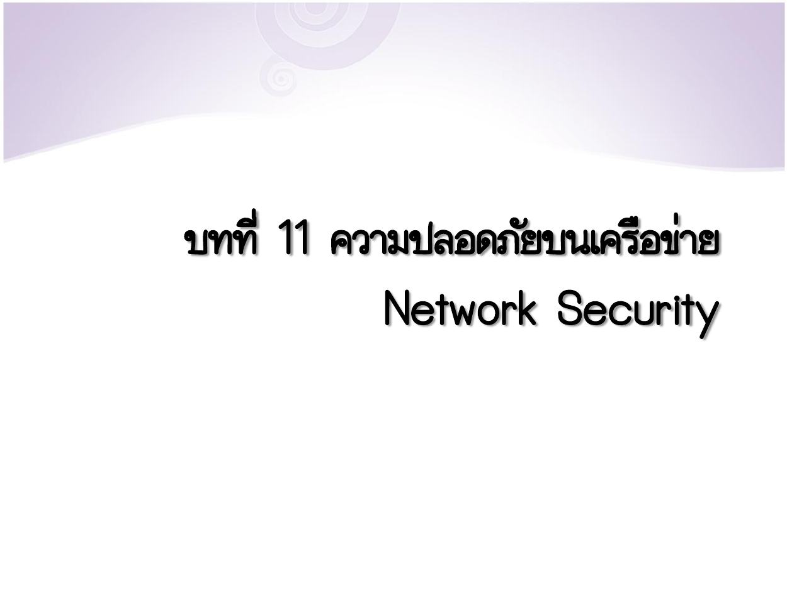
คลิกภาพเพื่อเปิดขยาย
อ่านข้อความต้นฉบับที่สกัดได้ (ไทย/อังกฤษตามไฟล์)
บทที่ 11 ความปลอดภัยบนเครือข่าย
Network Securityทบทวนภาษาไทย: Network Security: บริการและกลไกIPsec, TLS, PGP, VPN และ Firewall
กลับสารบัญ ↑หน้า 2 — มาตรการความปลอดภัยขั้นพื้นฐาน
ดูภาพต้นฉบับหน้า 2
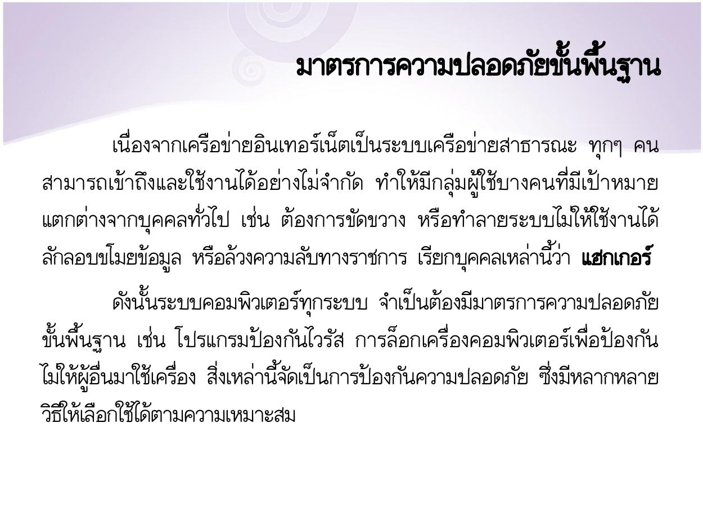
คลิกภาพเพื่อเปิดขยาย
อ่านข้อความต้นฉบับที่สกัดได้ (ไทย/อังกฤษตามไฟล์)
มาตรการความปลอดภัยขั้นพื้นฐาน
เนื่องจากเครือข่ายอินเทอร์เน็ตเป็นระบบเครือข่ายสาธารณะ ทุกๆ คน
สามารถเข้าถึงและใช้งานได้อย่างไม่จากัด ทาให้มีกลุ่มผู้ใช้บางคนที่มีเป้าหมาย
แตกต่างจากบุคคลทั่วไป เช่น ต้องการขัดขวาง หรือทาลายระบบไม่ให้ใช้งานได้
ลักลอบขโมยข้อมูล หรือล้วงความลับทางราชการ เรียกบุคคลเหล่านี้ว่า แฮกเกอร์
ดังนั้นระบบคอมพิวเตอร์ทุกระบบ จาเป็นต้องมีมาตรการความปลอดภัย
ขั้นพื้นฐาน เช่น โปรแกรมป้องกันไวรัส การล็อกเครื่องคอมพิวเตอร์เพื่อป้องกัน
ไม่ให้ผู้อื่นมาใช้เครื่อง สิ่งเหล่านี้จัดเป็นการป้องกันความปลอดภัย ซึ่งมีหลากหลาย
วิธีให้เลือกใช้ได้ตามความเหมาะสมทบทวนภาษาไทย: Network Security: บริการและกลไกIPsec, TLS, PGP, VPN และ Firewall
กลับสารบัญ ↑หน้า 3 — ความปลอดภัยบนสภาพแวดล้อมภายนอก
ดูภาพต้นฉบับหน้า 3
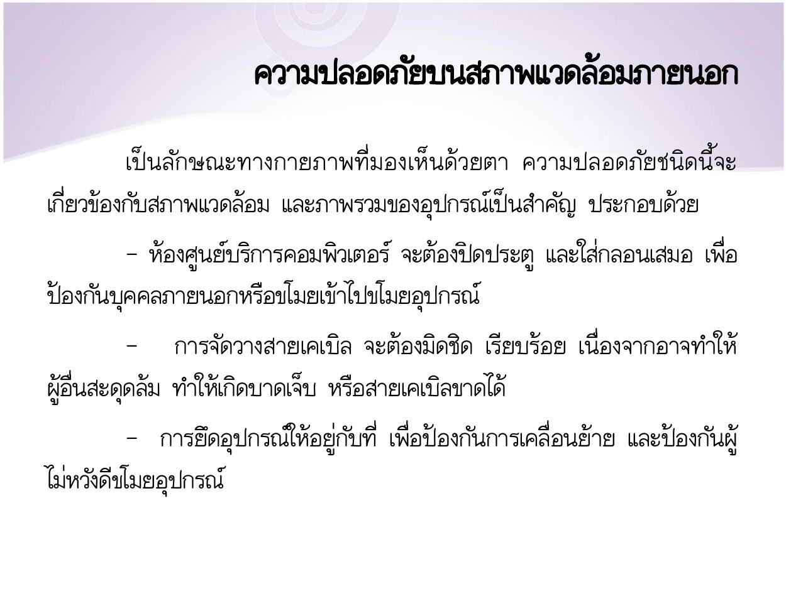
คลิกภาพเพื่อเปิดขยาย
อ่านข้อความต้นฉบับที่สกัดได้ (ไทย/อังกฤษตามไฟล์)
ความปลอดภัยบนสภาพแวดล้อมภายนอก
เป็นลักษณะทางกายภาพที่มองเห็น ด้วยตา ความปลอดภัยชนิดนี้จะ
เกี่ยวข้องกับสภาพแวดล้อม และภาพรวมของอุปกรณ์เป็นสาคัญ ประกอบด้วย
- ห้องศูนย์บริการคอมพิวเตอร์ จะต้องปิดประตู และใส่กลอนเสมอ เพื่อ
ป้องกันบุคคลภายนอกหรือขโมยเข้าไปขโมยอุปกรณ์
- การจัดวางสายเคเบิล จะต้องมิดชิด เรียบร้อย เนื่องจากอาจทาให้
ผู้อื่นสะดุดล้ม ทาให้เกิดบาดเจ็บ หรือสายเคเบิลขาดได้
- การยึดอุปกรณ์ให้อยู่กับที่ เพื่อป้องกันการเคลื่อนย้าย และป้องกันผู้
ไม่หวังดีขโมยอุปกรณ์ทบทวนภาษาไทย: Network Security: บริการและกลไกIPsec, TLS, PGP, VPN และ Firewall
กลับสารบัญ ↑หน้า 4 — ต้นฉบับเป็นภาพ/ไม่มีข้อความที่สกัดได้
ดูภาพต้นฉบับหน้า 4
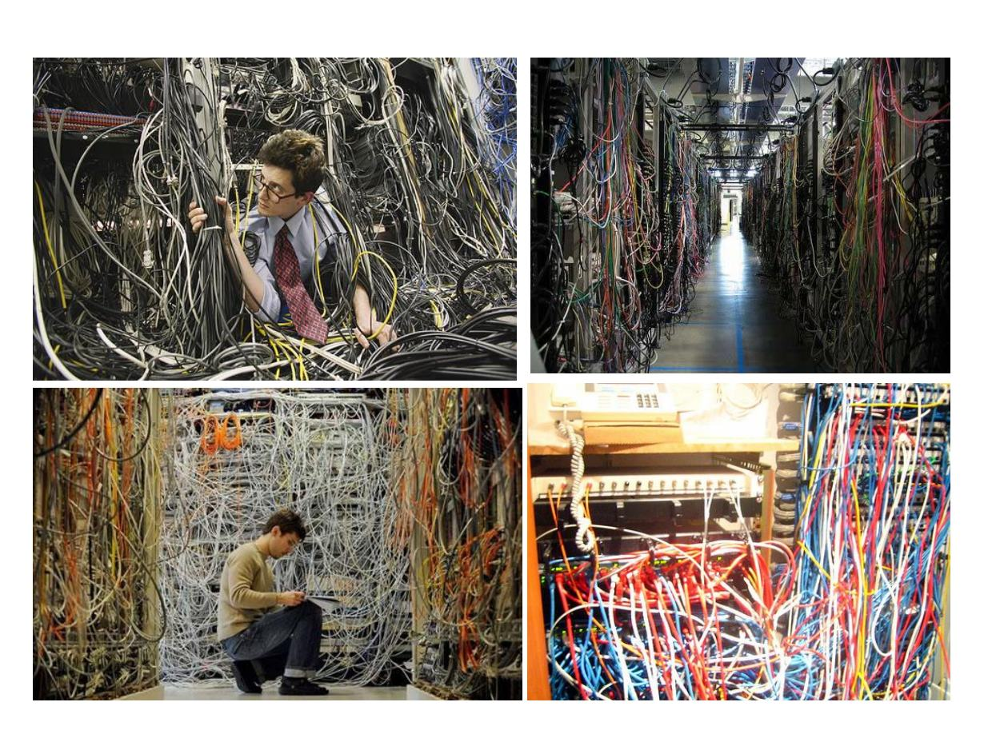
คลิกภาพเพื่อเปิดขยาย
อ่านข้อความต้นฉบับที่สกัดได้ (ไทย/อังกฤษตามไฟล์)
หน้านี้ไม่มีข้อความที่สกัดได้ กรุณาดูภาพต้นฉบับ
ทบทวนภาษาไทย: Network Security: บริการและกลไกIPsec, TLS, PGP, VPN และ Firewall
กลับสารบัญ ↑หน้า 5 — ต้นฉบับเป็นภาพ/ไม่มีข้อความที่สกัดได้
ดูภาพต้นฉบับหน้า 5
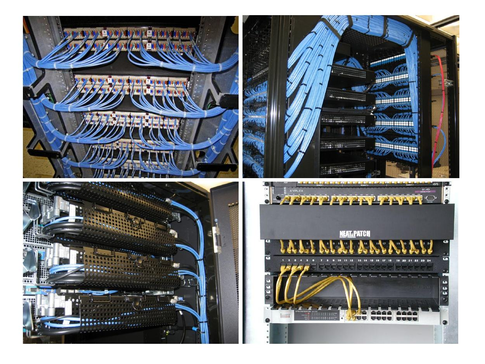
คลิกภาพเพื่อเปิดขยาย
อ่านข้อความต้นฉบับที่สกัดได้ (ไทย/อังกฤษตามไฟล์)
หน้านี้ไม่มีข้อความที่สกัดได้ กรุณาดูภาพต้นฉบับ
ทบทวนภาษาไทย: Network Security: บริการและกลไกIPsec, TLS, PGP, VPN และ Firewall
กลับสารบัญ ↑หน้า 6 — ความปลอดภัยบนสภาพแวดล้อมภายนอก
ดูภาพต้นฉบับหน้า 6
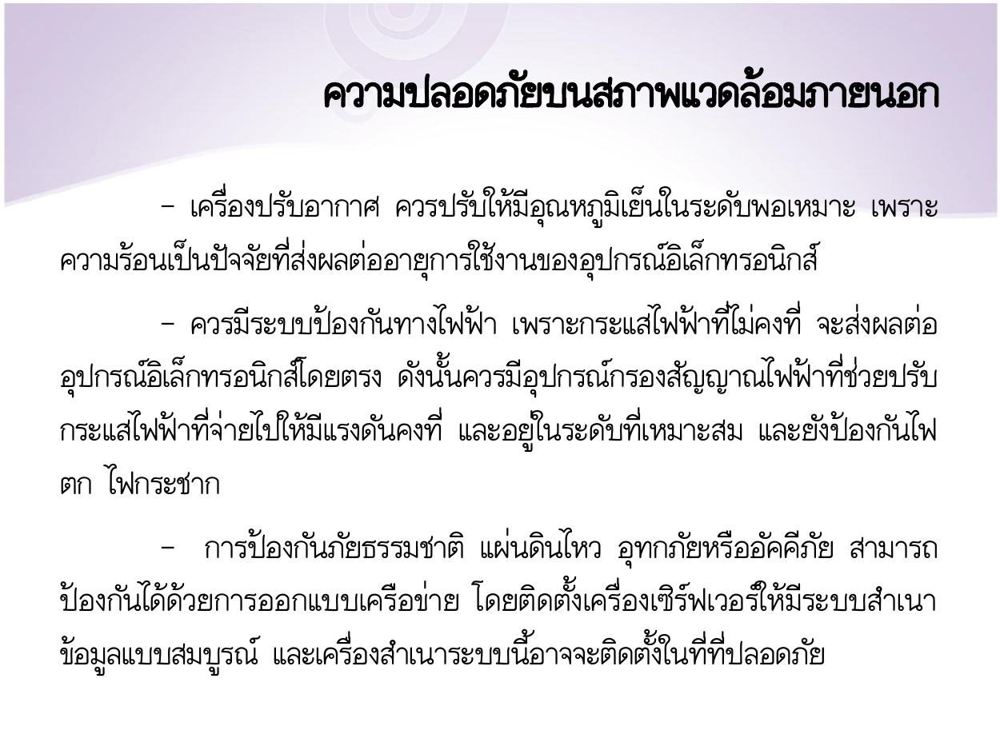
คลิกภาพเพื่อเปิดขยาย
อ่านข้อความต้นฉบับที่สกัดได้ (ไทย/อังกฤษตามไฟล์)
ความปลอดภัยบนสภาพแวดล้อมภายนอก
- เครื่องปรับอากาศ ควรปรับให้มีอุณหภูมิเย็นในระดับพอเหมาะ เพราะ
ความร้อนเป็นปัจจัยที่ส่งผลต่ออายุการใช้งานของอุปกรณ์อิเล็กทรอนิกส์
- ควรมีระบบป้องกันทางไฟฟ้า เพราะกระแสไฟฟ้าที่ไม่คงที่ จะส่งผลต่อ
อุปกรณ์อิเล็กทรอนิกส์โดยตรง ดังนั้นควรมีอุปกรณ์กรองสัญญาณไฟฟ้าที่ช่วยปรับ
กระแสไฟฟ้าที่จ่ายไปให้มีแรงดันคงที่ และอยู่ในระดับที่เหมาะสม และยังป้องกันไฟ
ตก ไฟกระชาก
- การป้องกันภัยธรรมชาติ แผ่นดินไหว อุทกภัยหรืออัคคีภัย สามารถ
ป้องกันได้ด้วยการออกแบบเครือข่าย โดยติดตั้งเครื่องเซิร์ฟเวอร์ให้มีระบบสาเนา
ข้อมูลแบบสมบูรณ์ และเครื่องสาเนาระบบนี้อาจจะติดตั้งในที่ที่ปลอดภัยทบทวนภาษาไทย: Network Security: บริการและกลไกIPsec, TLS, PGP, VPN และ Firewall
กลับสารบัญ ↑หน้า 7 — ความปลอดภัยด้านการปฏิบัติงาน
ดูภาพต้นฉบับหน้า 7
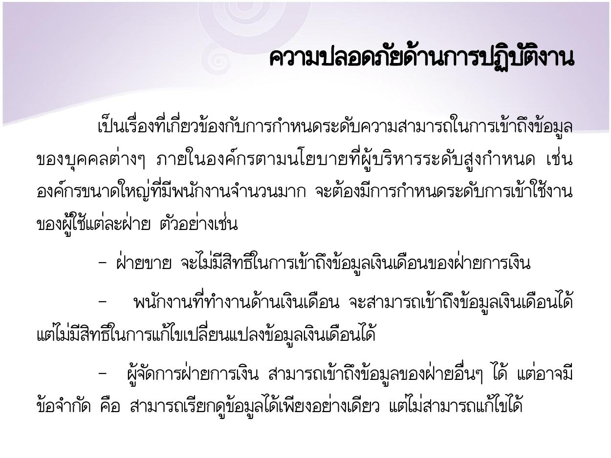
คลิกภาพเพื่อเปิดขยาย
อ่านข้อความต้นฉบับที่สกัดได้ (ไทย/อังกฤษตามไฟล์)
ความปลอดภัยด้านการปฏิบัติงาน
เป็นเรื่องที่เกี่ยวข้องกับการกาหนดระดับความสามารถในการเข้าถึงข้อมูล
ของบุ ค คลต่ า งๆ ภายในองค์ ก รตามนโยบายที่ ผู้ บ ริ ห ารระดั บ สู ง ก าหนด เช่ น
องค์กรขนาดใหญ่ที่มีพนักงานจานวนมาก จะต้องมีการกาหนดระดับการเข้าใช้งาน
ของผู้ใช้แต่ละฝ่าย ตัวอย่างเช่น
- ฝ่ายขาย จะไม่มีสิทธิในการเข้าถึงข้อมูลเงินเดือนของฝ่ายการเงิน
- พนักงานที่ทางานด้านเงินเดือน จะสามารถเข้าถึงข้อมูลเงินเดือนได้
แต่ไม่มีสิทธิในการแก้ไขเปลี่ยนแปลงข้อมูลเงินเดือนได้
- ผู้จัดการฝ่ายการเงิน สามารถเข้าถึงข้อมูลของฝ่ายอื่นๆ ได้ แต่อาจมี
ข้อจากัด คือ สามารถเรียกดูข้อมูลได้เพียงอย่างเดียว แต่ไม่สามารถแก้ไขได้ทบทวนภาษาไทย: Network Security: บริการและกลไกIPsec, TLS, PGP, VPN และ Firewall
กลับสารบัญ ↑หน้า 8 — การตรวจตราเฝ้าระวัง
ดูภาพต้นฉบับหน้า 8
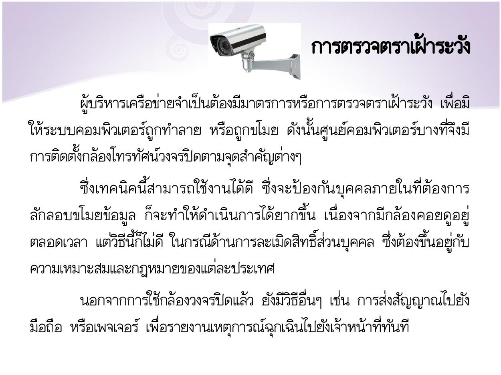
คลิกภาพเพื่อเปิดขยาย
อ่านข้อความต้นฉบับที่สกัดได้ (ไทย/อังกฤษตามไฟล์)
การตรวจตราเฝ้าระวัง
ผู้บริหารเครือข่ายจาเป็นต้องมีมาตรการหรือการตรวจตราเฝ้าระวัง เพื่อมิ
ให้ระบบคอมพิวเตอร์ถูกทาลาย หรือถูกขโมย ดังนั้นศูนย์คอมพิวเตอร์บางที่จึงมี
การติดตั้งกล้องโทรทัศน์วงจรปิดตามจุดสาคัญต่างๆ
ซึ่ง เทคนิ คนี้ สามารถใช้ ง านได้ดี ซึ่ ง จะป้ อ งกัน บุ ค คลภายในที่ ต้อ งการ
ลักลอบขโมยข้อมูล ก็จะทาให้ดาเนินการได้ยากขึ้น เนื่องจากมีกล้องคอยดูอยู่
ตลอดเวลา แต่วิธีนี้ก็ไม่ดี ในกรณีด้านการละเมิดสิทธิ์ส่วนบุคคล ซึ่งต้องขึ้นอยู่กับ
ความเหมาะสมและกฎหมายของแต่ละประเทศ
นอกจากการใช้กล้องวงจรปิดแล้ว ยังมีวิธีอื่นๆ เช่น การส่งสัญญาณไปยัง
มือถือ หรือเพจเจอร์ เพื่อรายงานเหตุการณ์ฉุกเฉินไปยังเจ้าหน้าที่ทันทีทบทวนภาษาไทย: Network Security: บริการและกลไกIPsec, TLS, PGP, VPN และ Firewall
กลับสารบัญ ↑หน้า 9 — การใช้รหัสผ่าน และระบบแสดงตัวตน
ดูภาพต้นฉบับหน้า 9
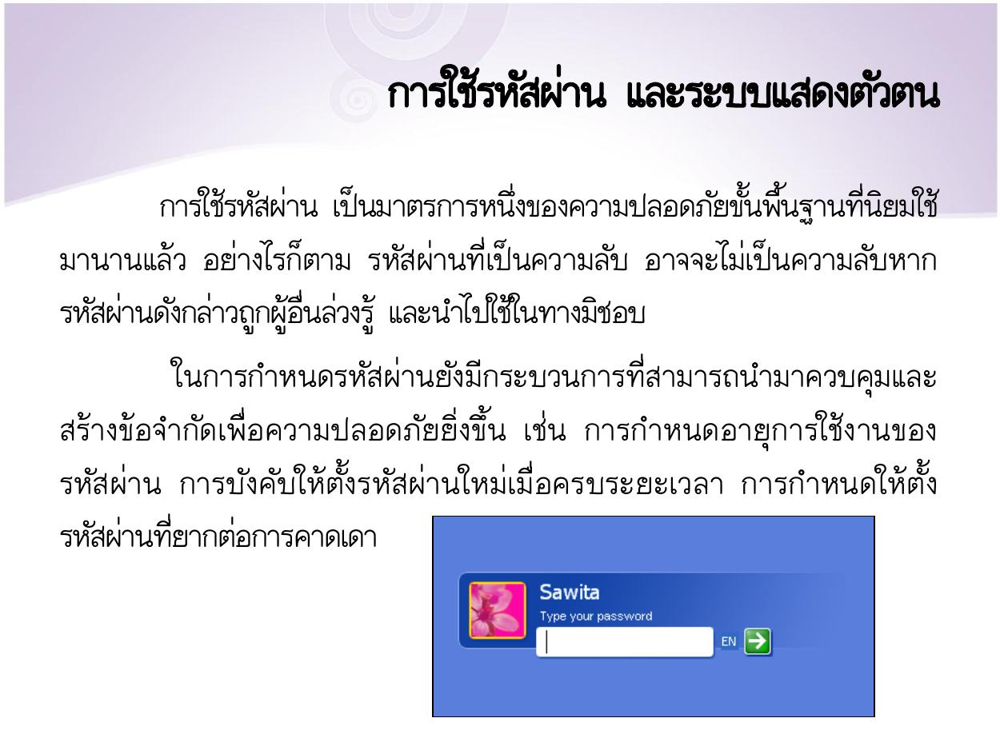
คลิกภาพเพื่อเปิดขยาย
อ่านข้อความต้นฉบับที่สกัดได้ (ไทย/อังกฤษตามไฟล์)
การใช้รหัสผ่าน และระบบแสดงตัวตน
การใช้รหัสผ่าน เป็นมาตรการหนึ่งของความปลอดภัยขั้นพื้นฐานที่นิยมใช้
มานานแล้ว อย่างไรก็ตาม รหัสผ่านที่เป็นความลับ อาจจะไม่เป็นความลับหาก
รหัสผ่านดังกล่าวถูกผู้อื่นล่วงรู้ และนาไปใช้ในทางมิชอบ
ในการกาหนดรหัสผ่านยังมีกระบวนการที่สามารถนามาควบคุมและ
สร้ า งข้ อ จ ากั ด เพื่ อ ความปลอดภั ย ยิ่ ง ขึ้ น เช่ น การก าหนดอายุ ก ารใช้ ง านของ
รหั ส ผ่ า น การบั ง คั บ ให้ ตั้ ง รหั ส ผ่ า นใหม่ เ มื่ อ ครบระยะเวลา การก าหนดให้ ตั้ ง
รหัสผ่านที่ยากต่อการคาดเดาทบทวนภาษาไทย: Network Security: บริการและกลไกIPsec, TLS, PGP, VPN และ Firewall
กลับสารบัญ ↑หน้า 10 — การใช้รหัสผ่าน และระบบแสดงตัวตน
ดูภาพต้นฉบับหน้า 10
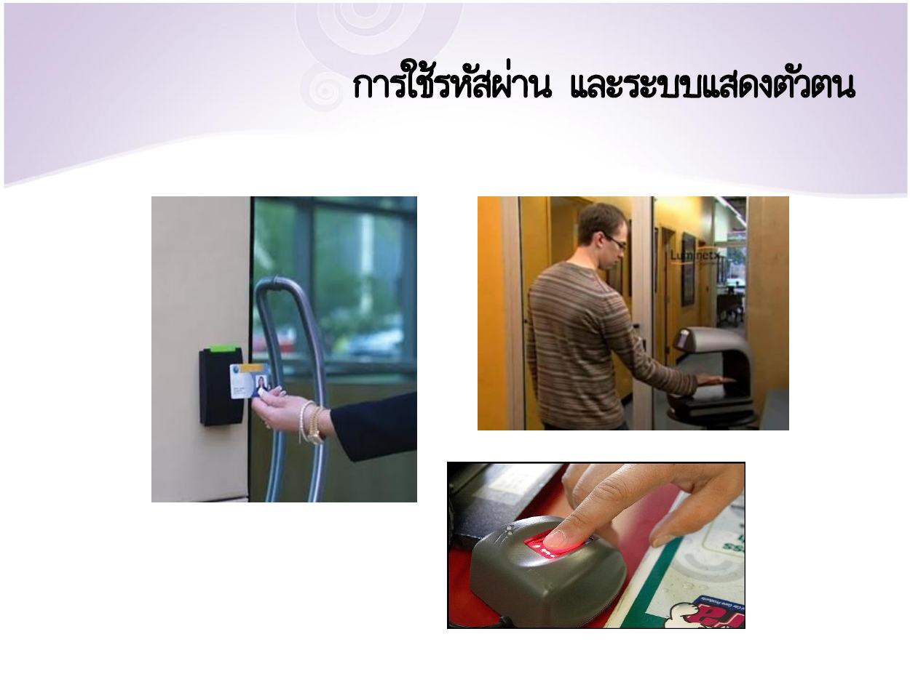
คลิกภาพเพื่อเปิดขยาย
อ่านข้อความต้นฉบับที่สกัดได้ (ไทย/อังกฤษตามไฟล์)
การใช้รหัสผ่าน และระบบแสดงตัวตน
ทบทวนภาษาไทย: Network Security: บริการและกลไกIPsec, TLS, PGP, VPN และ Firewall
กลับสารบัญ ↑หน้า 11 — การใช้รหัสผ่าน และระบบแสดงตัวตน
ดูภาพต้นฉบับหน้า 11
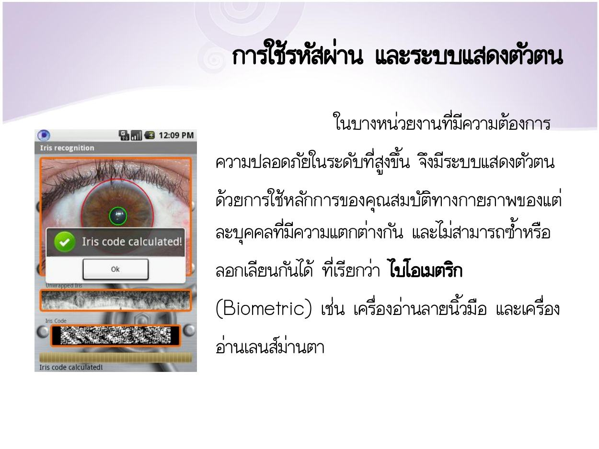
คลิกภาพเพื่อเปิดขยาย
อ่านข้อความต้นฉบับที่สกัดได้ (ไทย/อังกฤษตามไฟล์)
การใช้รหัสผ่าน และระบบแสดงตัวตน
ในบางหน่วยงานที่มีความต้องการ
ความปลอดภัยในระดับที่สูงขึ้น จึงมีระบบแสดงตัวตน
ด้วยการใช้หลักการของคุณสมบัติทางกายภาพของแต่
ละบุคคลที่มีความแตกต่างกัน และไม่สามารถซ้าหรือ
ลอกเลียนกันได้ ที่เรียกว่า ไบโอเมตริก
(Biometric) เช่น เครื่องอ่านลายนิ้วมือ และเครื่อง
อ่านเลนส์ม่านตาทบทวนภาษาไทย: Network Security: บริการและกลไกIPsec, TLS, PGP, VPN และ Firewall
กลับสารบัญ ↑หน้า 12 — การตรวจสอบ
ดูภาพต้นฉบับหน้า 12
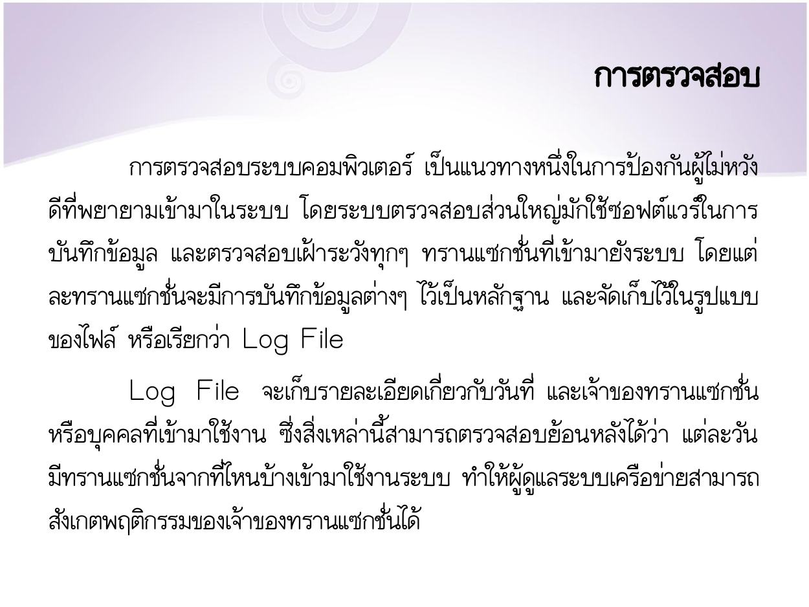
คลิกภาพเพื่อเปิดขยาย
อ่านข้อความต้นฉบับที่สกัดได้ (ไทย/อังกฤษตามไฟล์)
การตรวจสอบ
การตรวจสอบระบบคอมพิวเตอร์ เป็นแนวทางหนึ่งในการป้องกันผู้ไม่หวัง
ดีที่พยายามเข้ามาในระบบ โดยระบบตรวจสอบส่วนใหญ่มักใช้ซอฟต์แวร์ในการ
บันทึกข้อมูล และตรวจสอบเฝ้าระวังทุกๆ ทรานแซกชั่นที่เข้ามายังระบบ โดยแต่
ละทรานแซกชั่นจะมีการบันทึกข้อมูลต่างๆ ไว้เป็นหลักฐาน และจัดเก็บไว้ในรูปแบบ
ของไฟล์ หรือเรียกว่า Log File
Log File จะเก็บรายละเอียดเกี่ยวกับวันที่ และเจ้าของทรานแซกชั่น
หรือบุคคลที่เข้ามาใช้งาน ซึ่งสิ่งเหล่านี้สามารถตรวจสอบย้อนหลังได้ว่า แต่ละวัน
มีทรานแซกชั่นจากที่ไหนบ้างเข้ามาใช้งานระบบ ทาให้ผู้ดูแลระบบเครือข่ายสามารถ
สังเกตพฤติกรรมของเจ้าของทรานแซกชั่นได้ทบทวนภาษาไทย: Network Security: บริการและกลไกIPsec, TLS, PGP, VPN และ Firewall
กลับสารบัญ ↑หน้า 13 — การกาหนดสิทธิก์ ารใช้งาน
ดูภาพต้นฉบับหน้า 13
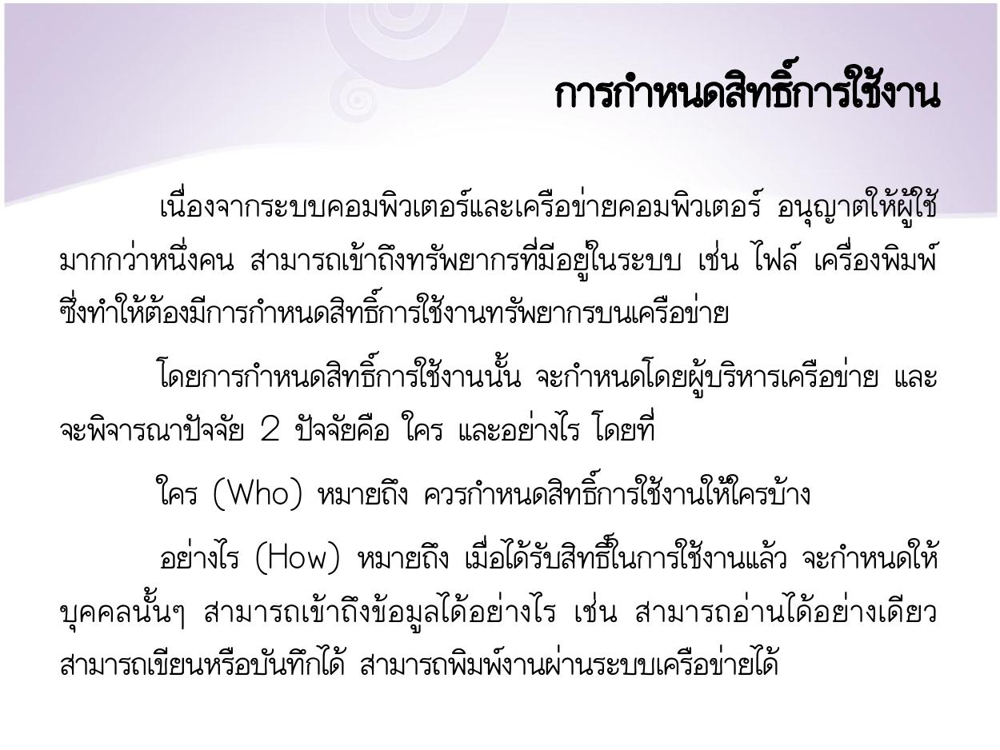
คลิกภาพเพื่อเปิดขยาย
อ่านข้อความต้นฉบับที่สกัดได้ (ไทย/อังกฤษตามไฟล์)
การกาหนดสิทธิก์ ารใช้งาน
เนื่องจากระบบคอมพิวเตอร์และเครือข่ายคอมพิวเตอร์ อนุญาตให้ผู้ใช้
มากกว่าหนึ่งคน สามารถเข้าถึงทรัพยากรที่มีอยู่ในระบบ เช่น ไฟล์ เครื่องพิมพ์
ซึ่งทาให้ต้องมีการกาหนดสิทธิ์การใช้งานทรัพยากรบนเครือข่าย
โดยการกาหนดสิทธิ์การใช้งานนั้น จะกาหนดโดยผู้บริหารเครือข่าย และ
จะพิจารณาปัจจัย 2 ปัจจัยคือ ใคร และอย่างไร โดยที่
ใคร (Who) หมายถึง ควรกาหนดสิทธิ์การใช้งานให้ใครบ้าง
อย่างไร (How) หมายถึง เมื่อได้รับสิทธิ์ในการใช้งานแล้ว จะกาหนดให้
บุ ค คลนั้ น ๆ สามารถเข้ า ถึ ง ข้ อ มู ล ได้ อ ย่ า งไร เช่ น สามารถอ่ า นได้ อ ย่ า งเดี ย ว
สามารถเขียนหรือบันทึกได้ สามารถพิมพ์งานผ่านระบบเครือข่ายได้ทบทวนภาษาไทย: Network Security: บริการและกลไกIPsec, TLS, PGP, VPN และ Firewall
กลับสารบัญ ↑หน้า 14 — การป้องกันไวรัส
ดูภาพต้นฉบับหน้า 14
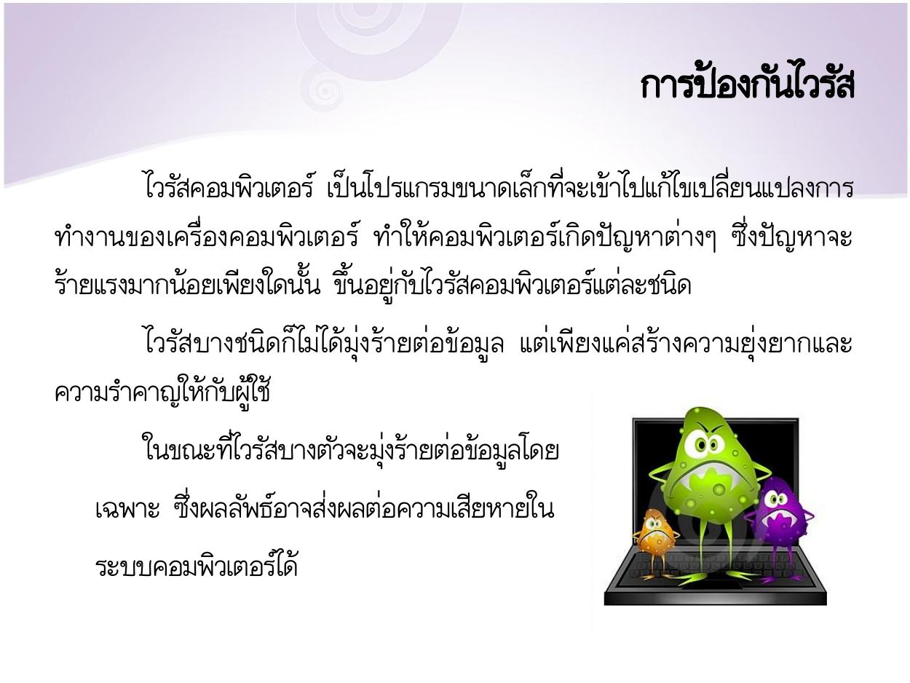
คลิกภาพเพื่อเปิดขยาย
อ่านข้อความต้นฉบับที่สกัดได้ (ไทย/อังกฤษตามไฟล์)
การป้องกันไวรัส
ไวรัสคอมพิวเตอร์ เป็นโปรแกรมขนาดเล็กที่จะเข้าไปแก้ไขเปลี่ยนแปลงการ
ทางานของเครื่องคอมพิวเตอร์ ทาให้คอมพิวเตอร์เกิดปัญหาต่างๆ ซึ่งปัญหาจะ
ร้ายแรงมากน้อยเพียงใดนั้น ขึ้นอยู่กับไวรัสคอมพิวเตอร์แต่ละชนิด
ไวรัสบางชนิดก็ไม่ได้มุ่งร้ายต่อข้อมูล แต่เพียงแค่สร้างความยุ่งยากและ
ความราคาญให้กับผู้ใช้
ในขณะที่ไวรัสบางตัวจะมุ่งร้ายต่อข้อมูลโดย
เฉพาะ ซึ่งผลลัพธ์อาจส่งผลต่อความเสียหายใน
ระบบคอมพิวเตอร์ได้ทบทวนภาษาไทย: Network Security: บริการและกลไกIPsec, TLS, PGP, VPN และ Firewall
กลับสารบัญ ↑หน้า 15 — การป้องกันไวรัส
ดูภาพต้นฉบับหน้า 15
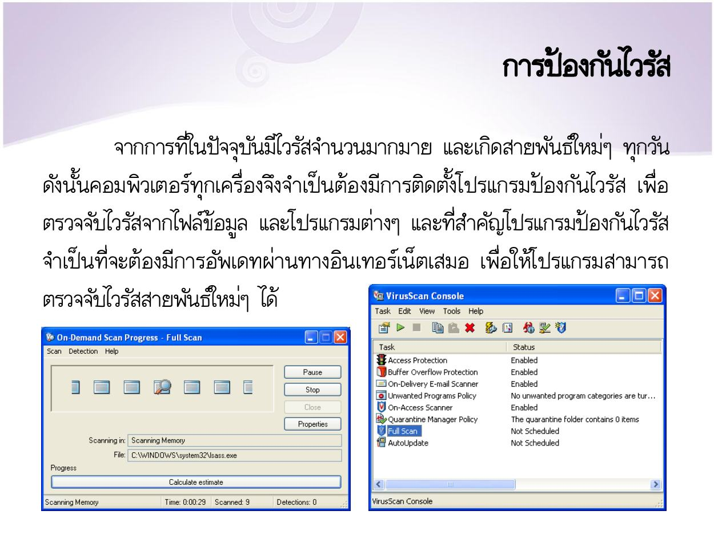
คลิกภาพเพื่อเปิดขยาย
อ่านข้อความต้นฉบับที่สกัดได้ (ไทย/อังกฤษตามไฟล์)
การป้องกันไวรัส
จากการที่ในปัจจุบันมีไวรัสจานวนมากมาย และเกิดสายพันธ์ใหม่ๆ ทุกวัน
ดังนั้นคอมพิวเตอร์ทุกเครื่องจึงจาเป็นต้องมีการติดตั้งโปรแกรมป้องกันไวรัส เพื่อ
ตรวจจับไวรัสจากไฟล์ข้อมูล และโปรแกรมต่างๆ และที่สาคัญโปรแกรมป้องกันไวรัส
จาเป็นที่จะต้องมีการอัพเดทผ่านทางอินเทอร์เน็ตเสมอ เพื่อให้โปรแกรมสามารถ
ตรวจจับไวรัสสายพันธ์ใหม่ๆ ได้ทบทวนภาษาไทย: Network Security: บริการและกลไกIPsec, TLS, PGP, VPN และ Firewall
กลับสารบัญ ↑หน้า 16 — การป้องกันไวรัส
ดูภาพต้นฉบับหน้า 16
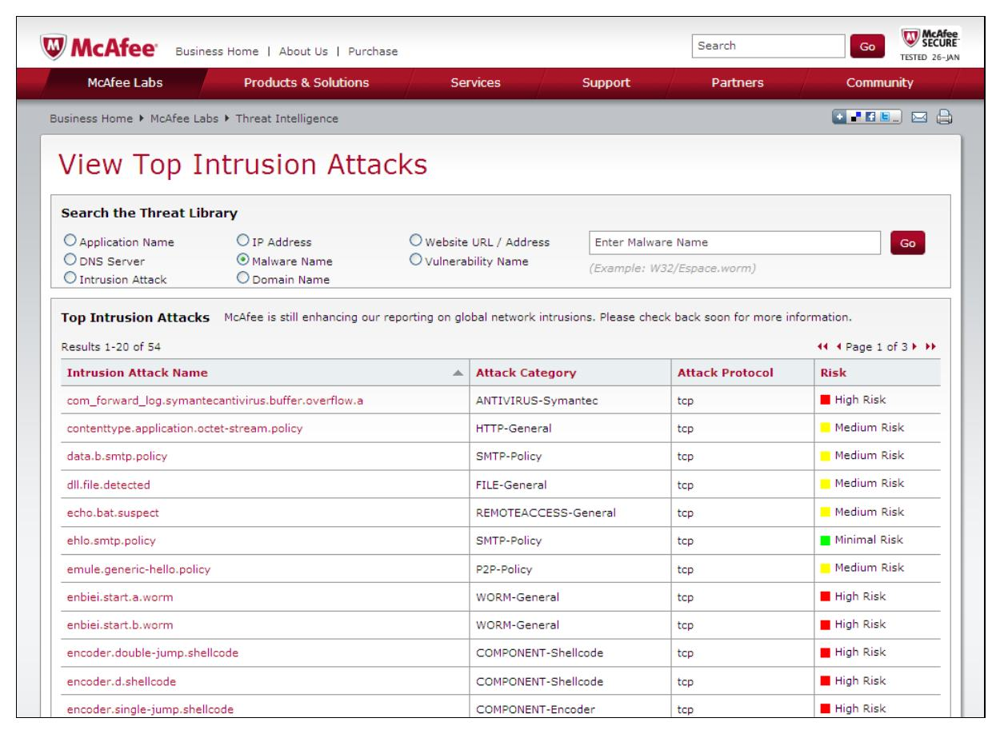
คลิกภาพเพื่อเปิดขยาย
อ่านข้อความต้นฉบับที่สกัดได้ (ไทย/อังกฤษตามไฟล์)
การป้องกันไวรัส
ทบทวนภาษาไทย: Network Security: บริการและกลไกIPsec, TLS, PGP, VPN และ Firewall
กลับสารบัญ ↑หน้า 17 — วิธีการโจมตีระบบ
ดูภาพต้นฉบับหน้า 17
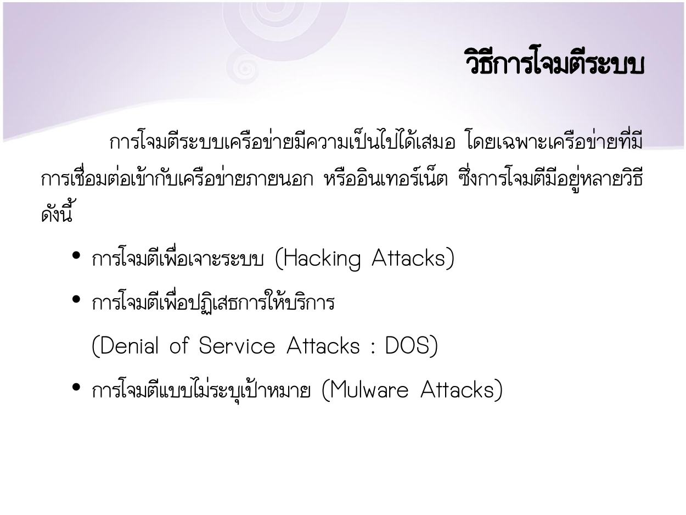
คลิกภาพเพื่อเปิดขยาย
อ่านข้อความต้นฉบับที่สกัดได้ (ไทย/อังกฤษตามไฟล์)
วิธีการโจมตีระบบ
การโจมตีระบบเครือข่ายมีความเป็นไปได้เสมอ โดยเฉพาะเครือข่ายที่มี
การเชื่อมต่อเข้ากับเครือข่ายภายนอก หรืออินเทอร์เน็ต ซึ่งการโจมตีมีอยู่หลายวิธี
ดังนี้
• การโจมตีเพื่อเจาะระบบ (Hacking Attacks)
• การโจมตีเพื่อปฏิเสธการให้บริการ
(Denial of Service Attacks : DOS)
• การโจมตีแบบไม่ระบุเป้าหมาย (Mulware Attacks)ทบทวนภาษาไทย: Network Security: บริการและกลไกIPsec, TLS, PGP, VPN และ Firewall
กลับสารบัญ ↑หน้า 18 — วิธีการโจมตีระบบ
ดูภาพต้นฉบับหน้า 18
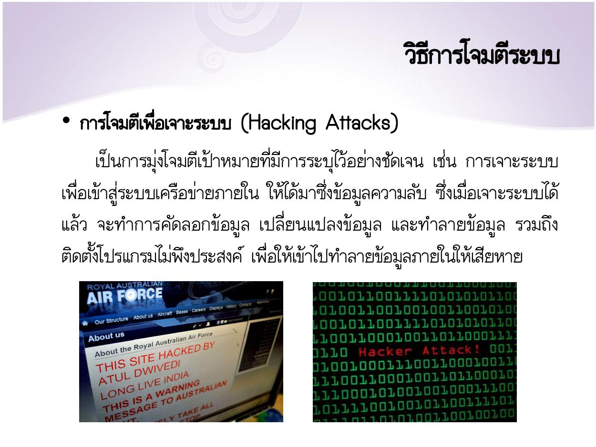
คลิกภาพเพื่อเปิดขยาย
อ่านข้อความต้นฉบับที่สกัดได้ (ไทย/อังกฤษตามไฟล์)
วิธีการโจมตีระบบ
• การโจมตีเพื่อเจาะระบบ (Hacking Attacks)
เป็นการมุ่งโจมตีเป้าหมายที่มีการระบุไว้อย่างชัดเจน เช่น การเจาะระบบ
เพื่อเข้าสู่ระบบเครือข่ายภายใน ให้ได้มาซึ่งข้อมูลความลับ ซึ่งเมื่อเจาะระบบได้
แล้ว จะทาการคัดลอกข้อมูล เปลี่ยนแปลงข้อมูล และทาลายข้อมูล รวมถึง
ติดตั้งโปรแกรมไม่พึงประสงค์ เพื่อให้เข้าไปทาลายข้อมูลภายในให้เสียหายทบทวนภาษาไทย: Network Security: บริการและกลไกIPsec, TLS, PGP, VPN และ Firewall
กลับสารบัญ ↑หน้า 19 — วิธีการโจมตีระบบ
ดูภาพต้นฉบับหน้า 19
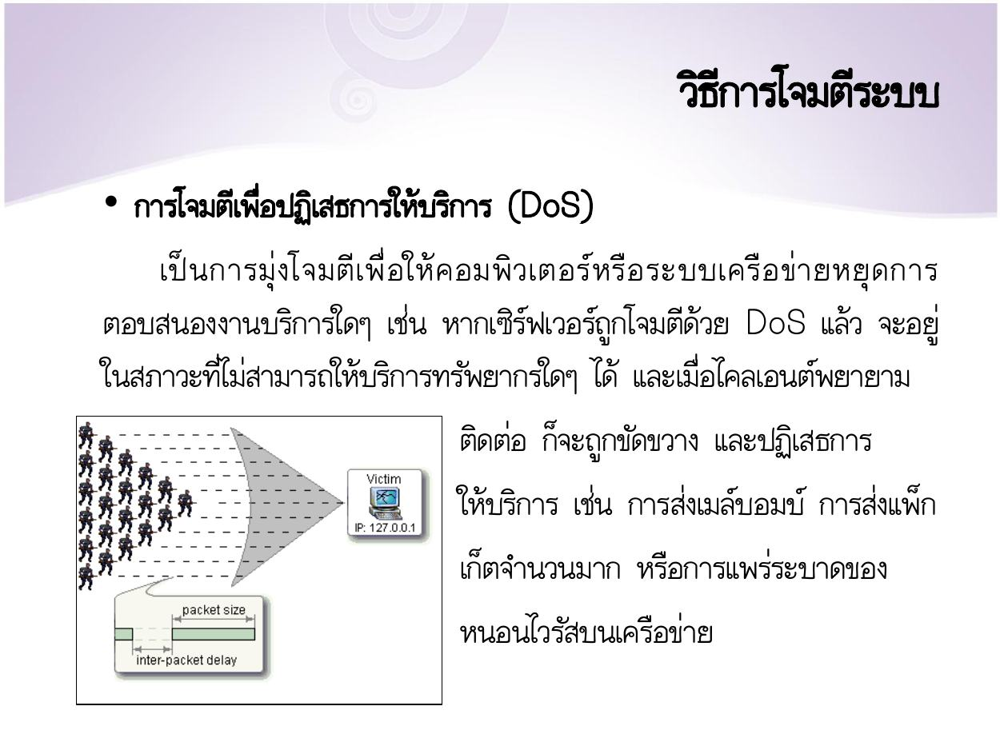
คลิกภาพเพื่อเปิดขยาย
อ่านข้อความต้นฉบับที่สกัดได้ (ไทย/อังกฤษตามไฟล์)
วิธีการโจมตีระบบ
• การโจมตีเพื่อปฏิเสธการให้บริการ (DoS)
เป็ น การมุ่ ง โจมตี เ พื่ อ ให้ ค อมพิ ว เตอร์ ห รื อ ระบบเครื อ ข่ า ยหยุ ด การ
ตอบสนองงานบริการใดๆ เช่น หากเซิร์ฟเวอร์ถูกโจมตีด้วย DoS แล้ว จะอยู่
ในสภาวะที่ไม่สามารถให้บริการทรัพยากรใดๆ ได้ และเมื่อไคลเอนต์พยายาม
ติดต่อ ก็จะถูกขัดขวาง และปฏิเสธการ
ให้บริการ เช่น การส่งเมล์บอมบ์ การส่งแพ็ก
เก็ตจานวนมาก หรือการแพร่ระบาดของ
หนอนไวรัสบนเครือข่ายทบทวนภาษาไทย: Network Security: บริการและกลไกIPsec, TLS, PGP, VPN และ Firewall
กลับสารบัญ ↑หน้า 20 — วิธีการโจมตีระบบ
ดูภาพต้นฉบับหน้า 20
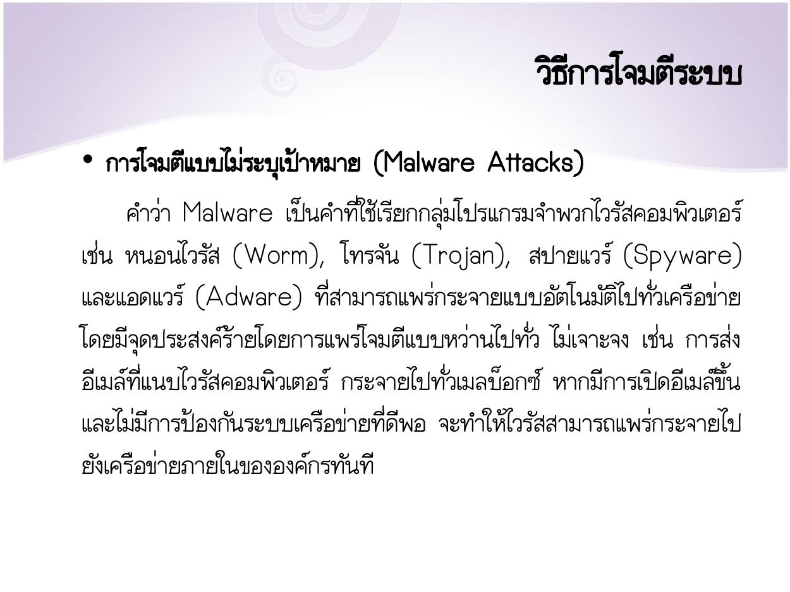
คลิกภาพเพื่อเปิดขยาย
อ่านข้อความต้นฉบับที่สกัดได้ (ไทย/อังกฤษตามไฟล์)
วิธีการโจมตีระบบ
• การโจมตีแบบไม่ระบุเป้าหมาย (Malware Attacks)
คาว่า Malware เป็นคาที่ใช้เรียกกลุ่มโปรแกรมจาพวกไวรัสคอมพิวเตอร์
เช่น หนอนไวรัส (Worm), โทรจัน (Trojan), สปายแวร์ (Spyware)
และแอดแวร์ (Adware) ที่สามารถแพร่กระจายแบบอัตโนมัติไปทั่วเครือข่าย
โดยมีจุดประสงค์ร้ายโดยการแพร่โจมตีแบบหว่านไปทั่ว ไม่เจาะจง เช่น การส่ง
อีเมล์ที่แนบไวรัสคอมพิวเตอร์ กระจายไปทั่วเมลบ็อกซ์ หากมีการเปิดอีเมล์ขึ้น
และไม่มีการป้องกันระบบเครือข่ายที่ดีพอ จะทาให้ไวรัสสามารถแพร่กระจายไป
ยังเครือข่ายภายในขององค์กรทันทีทบทวนภาษาไทย: Network Security: บริการและกลไกIPsec, TLS, PGP, VPN และ Firewall
กลับสารบัญ ↑หน้า 21 — ต้นฉบับเป็นภาพ/ไม่มีข้อความที่สกัดได้
ดูภาพต้นฉบับหน้า 21
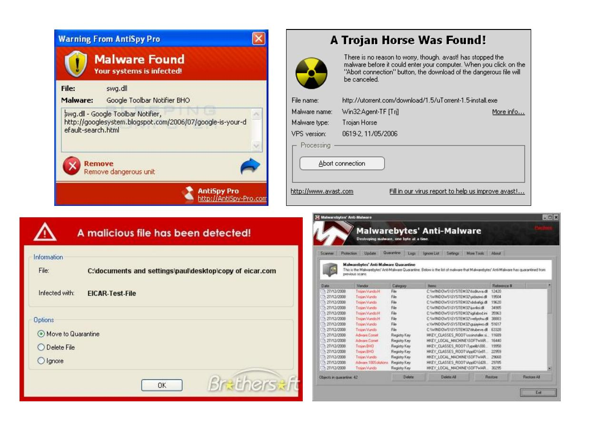
คลิกภาพเพื่อเปิดขยาย
อ่านข้อความต้นฉบับที่สกัดได้ (ไทย/อังกฤษตามไฟล์)
หน้านี้ไม่มีข้อความที่สกัดได้ กรุณาดูภาพต้นฉบับ
ทบทวนภาษาไทย: Network Security: บริการและกลไกIPsec, TLS, PGP, VPN และ Firewall
กลับสารบัญ ↑หน้า 22 — ไฟร์วอลล์ (Firewall)
ดูภาพต้นฉบับหน้า 22
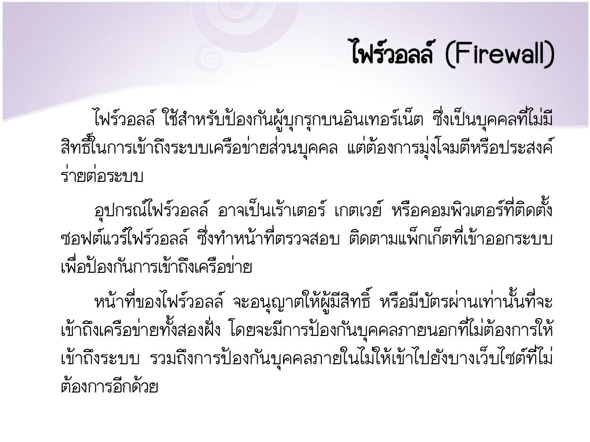
คลิกภาพเพื่อเปิดขยาย
อ่านข้อความต้นฉบับที่สกัดได้ (ไทย/อังกฤษตามไฟล์)
ไฟร์วอลล์ (Firewall)
ไฟร์วอลล์ ใช้สาหรับป้องกันผู้บุกรุกบนอินเทอร์เน็ต ซึ่งเป็นบุคคลที่ไม่มี
สิทธิ์ในการเข้าถึงระบบเครือข่ายส่วนบุคคล แต่ต้องการมุ่งโจมตีหรือประสงค์
ร่ายต่อระบบ
อุปกรณ์ไฟร์วอลล์ อาจเป็นเร้าเตอร์ เกตเวย์ หรือคอมพิวเตอร์ที่ติดตั้ง
ซอฟต์แวร์ไฟร์วอลล์ ซึ่งทาหน้าที่ตรวจสอบ ติดตามแพ็กเก็ตที่เข้าออกระบบ
เพื่อป้องกันการเข้าถึงเครือข่าย
หน้าที่ของไฟร์วอลล์ จะอนุญาตให้ผู้มีสิทธิ์ หรือมีบัตรผ่านเท่านั้นที่จะ
เข้าถึงเครือข่ายทั้งสองฝั่ง โดยจะมีการป้องกันบุคคลภายนอกที่ไม่ต้องการให้
เข้าถึงระบบ รวมถึงการป้องกันบุคคลภายในไม่ให้เข้าไปยังบางเว็บไซต์ที่ไม่
ต้องการอีกด้วยทบทวนภาษาไทย: Network Security: บริการและกลไกIPsec, TLS, PGP, VPN และ Firewall
กลับสารบัญ ↑หน้า 23 — ต้นฉบับเป็นภาพ/ไม่มีข้อความที่สกัดได้
ดูภาพต้นฉบับหน้า 23
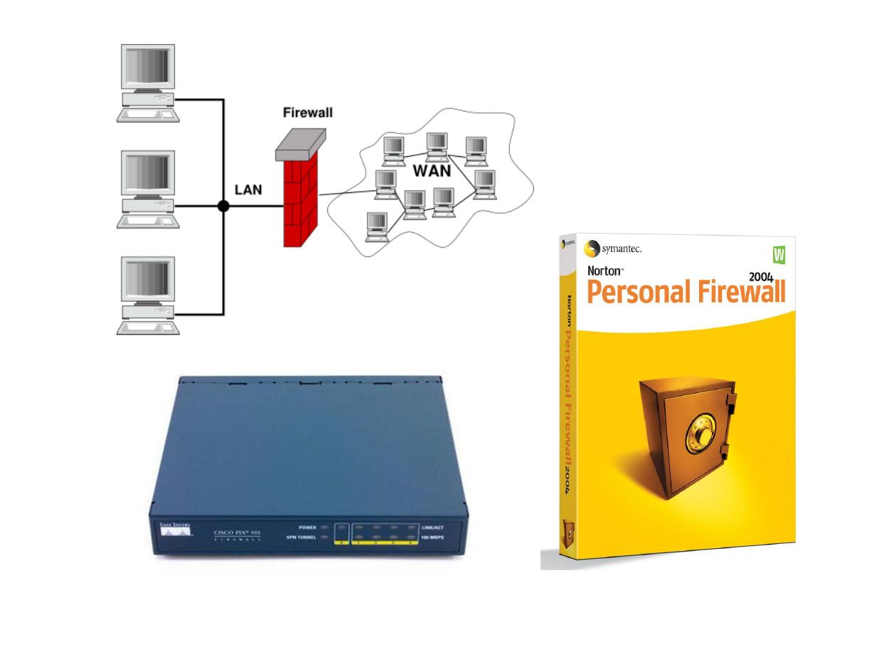
คลิกภาพเพื่อเปิดขยาย
อ่านข้อความต้นฉบับที่สกัดได้ (ไทย/อังกฤษตามไฟล์)
หน้านี้ไม่มีข้อความที่สกัดได้ กรุณาดูภาพต้นฉบับ
ทบทวนภาษาไทย: Network Security: บริการและกลไกIPsec, TLS, PGP, VPN และ Firewall
กลับสารบัญ ↑หน้า 24 — ไฟร์วอลล์ (Firewall)
ดูภาพต้นฉบับหน้า 24
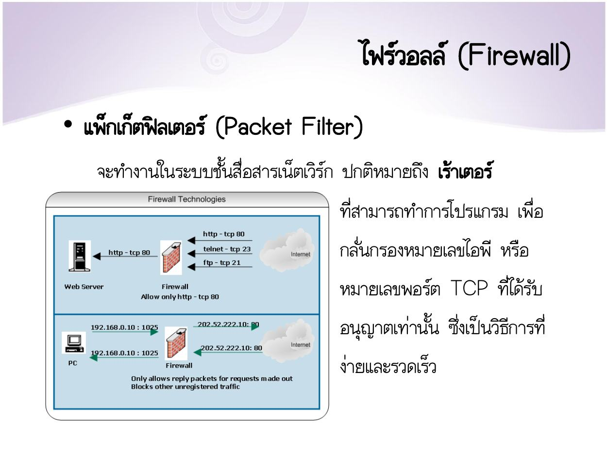
คลิกภาพเพื่อเปิดขยาย
อ่านข้อความต้นฉบับที่สกัดได้ (ไทย/อังกฤษตามไฟล์)
ไฟร์วอลล์ (Firewall)
• แพ็กเก็ตฟิลเตอร์ (Packet Filter)
จะทางานในระบบชั้นสื่อสารเน็ตเวิร์ก ปกติหมายถึง เร้าเตอร์
ที่สามารถทาการโปรแกรม เพื่อ
กลั่นกรองหมายเลขไอพี หรือ
หมายเลขพอร์ต TCP ที่ได้รับ
อนุญาตเท่านั้น ซึ่งเป็นวิธีการที่
ง่ายและรวดเร็วทบทวนภาษาไทย: Network Security: บริการและกลไกIPsec, TLS, PGP, VPN และ Firewall
กลับสารบัญ ↑หน้า 25 — ไฟร์วอลล์ (Firewall)
ดูภาพต้นฉบับหน้า 25
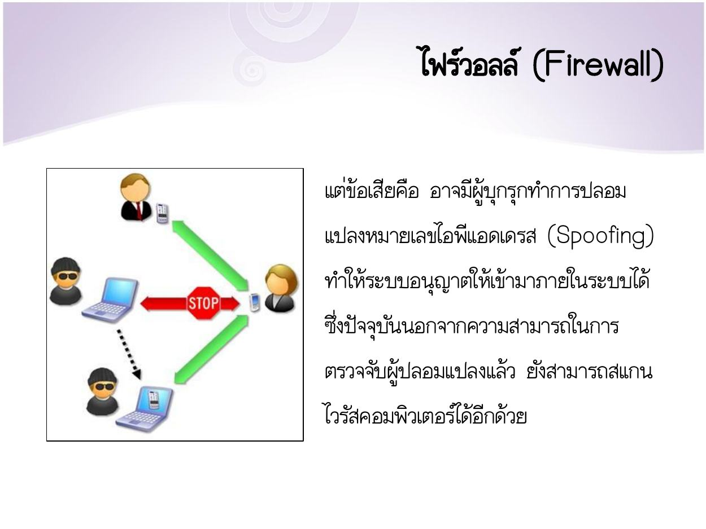
คลิกภาพเพื่อเปิดขยาย
อ่านข้อความต้นฉบับที่สกัดได้ (ไทย/อังกฤษตามไฟล์)
ไฟร์วอลล์ (Firewall)
แต่ข้อเสียคือ อาจมีผู้บุกรุกทาการปลอม
แปลงหมายเลขไอพีแอดเดรส (Spoofing)
ทาให้ระบบอนุญาตให้เข้ามาภายในระบบได้
ซึ่งปัจจุบันนอกจากความสามารถในการ
ตรวจจับผู้ปลอมแปลงแล้ว ยังสามารถสแกน
ไวรัสคอมพิวเตอร์ได้อีกด้วย
ทบทวนภาษาไทย: Network Security: บริการและกลไกIPsec, TLS, PGP, VPN และ Firewall
กลับสารบัญ ↑หน้า 26 — ไฟร์วอลล์ (Firewall)
ดูภาพต้นฉบับหน้า 26
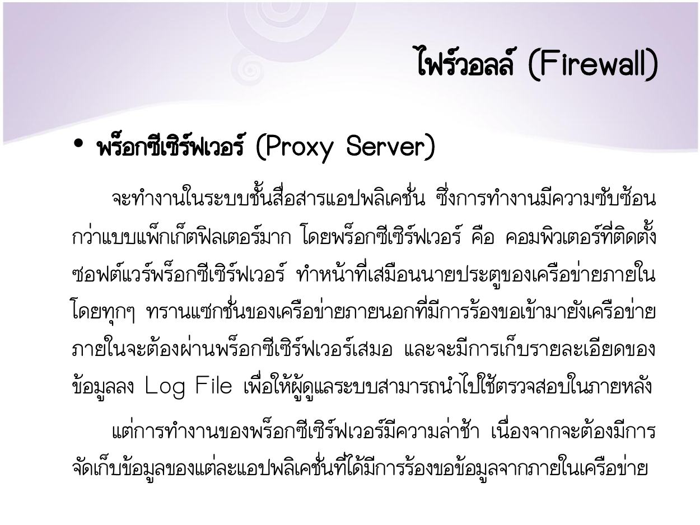
คลิกภาพเพื่อเปิดขยาย
อ่านข้อความต้นฉบับที่สกัดได้ (ไทย/อังกฤษตามไฟล์)
ไฟร์วอลล์ (Firewall)
• พร็อกซีเซิร์ฟเวอร์ (Proxy Server)
จะทางานในระบบชั้นสื่อสารแอปพลิเคชั่น ซึ่งการทางานมีความซับซ้อน
กว่าแบบแพ็กเก็ตฟิลเตอร์มาก โดยพร็อกซีเซิร์ฟเวอร์ คือ คอมพิวเตอร์ที่ติดตั้ง
ซอฟต์แวร์พร็อกซีเซิร์ฟเวอร์ ทาหน้าที่เสมือนนายประตูของเครือข่ายภายใน
โดยทุกๆ ทรานแซกชั่นของเครือข่ายภายนอกที่มีการร้องขอเข้ามายังเครือข่าย
ภายในจะต้องผ่านพร็อกซีเซิร์ฟเวอร์เสมอ และจะมีการเก็บรายละเอียดของ
ข้อมูลลง Log File เพื่อให้ผู้ดูแลระบบสามารถนาไปใช้ตรวจสอบในภายหลัง
แต่การทางานของพร็อกซีเซิร์ฟเวอร์มีความล่าช้า เนื่องจากจะต้องมีการ
จัดเก็บข้อมูลของแต่ละแอปพลิเคชั่นที่ได้มีการร้องขอข้อมูลจากภายในเครือข่ายทบทวนภาษาไทย: Network Security: บริการและกลไกIPsec, TLS, PGP, VPN และ Firewall
กลับสารบัญ ↑